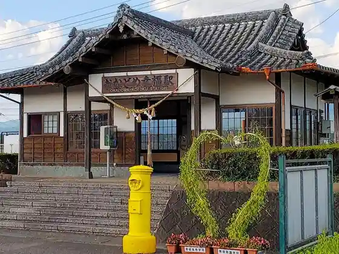
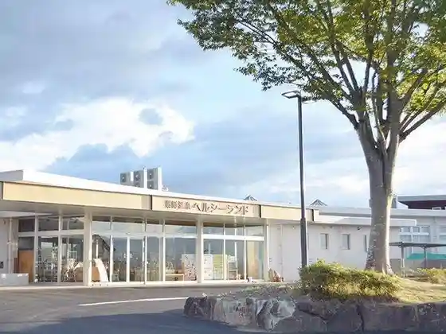
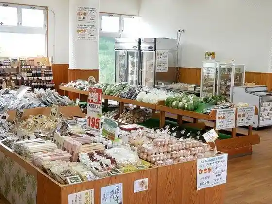
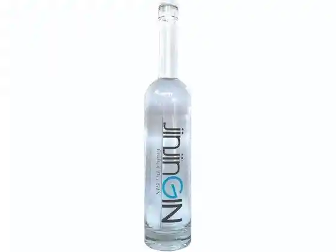

Okadome Kofuku Eki
Asagiri, Kumamoto · 0966-45-7220 · Official / source link

Asagiri Kusurishi Onsen Herushii Land
Asagiri, Kumamoto · 0966-47-0755 · Official / source link

Asagiri Fureai Bussan Kan
Asagiri, Kumamoto · 0966-47-0755 · Official / source link

Takada Shuzo Ba
Asagiri, Kumamoto · 0966-45-0200 · Official / source link

Tenshi no Mizu Park
Asagiri, Kumamoto · 0966-45-7220 · Official / source link
Shiraga Gaku Sembo Tembo Tokoro
Asagiri, Kumamoto · 0966-45-7220 · Official / source link
Miyahara Kannon
Asagiri, Kumamoto · 0966-45-7226 · Official / source link
Shoku Fukada Kannon
Asagiri, Kumamoto · 0966-45-7226 · Official / source link
Nagamine Kannon
Asagiri, Kumamoto · 0966-22-3793 · Official / source link
Uchiyama Kannon
Asagiri, Kumamoto · 0966-45-7226 · Official / source link
Kaku I Kannon (Kyushu Sagara 33 Kannon)
Asagiri, Kumamoto · 0966-45-7220 · Official / source link
Aki Toki Kannon
Asagiri, Kumamoto · 0966-45-7226 · Official / source link
Tanimizu Kusurishi
Asagiri, Kumamoto · 0966-45-7220 · Official / source link
Sue Aso Shaka Do
Asagiri, Kumamoto · 0966-45-7226 · Official / source link
Jozu Kannon
Asagiri, Kumamoto · 0966-45-7226 · Official / source link
Kachi Fuku Tera Ato Bishamonten Ritsuzo
Asagiri, Kumamoto · 0966-45-7226 · Official / source link
Shiraga Gaku
Asagiri, Kumamoto · 0966-45-7220 · Official / source link
Asagiri Meishu Kai
Asagiri, Kumamoto · 0966-45-1055 · Official / source link
Kurobuta Kitchin KUMAKURO Kofuku Eki Mise
Asagiri, Kumamoto · 0966-45-6604 · Official / source link
Kumamoto Kuraungorufu Kurabu
Asagiri, Kumamoto · 0966-45-5611 · Official / source link
Sai Sono Kofun Gun
Asagiri, Kumamoto · Official / source link
Kachi Fuku Tera Kanren Isan Gun
Asagiri, Kumamoto · Official / source link
Yamagami Hachiman Shrine
Asagiri, Kumamoto · Official / source link
Ue Village Sagara Shi Kanren Isan Gun
Asagiri, Kumamoto · Official / source link
Shiraga Shrine
Asagiri, Kumamoto · Official / source link
Tanimizu Yakushido
Asagiri, Kumamoto · Official / source link
Okadome Kumano Za Shrine
Asagiri, Kumamoto · Official / source link
Fukada Daio Shrine (Fukada Aso Shrine)
Asagiri, Kumamoto · Official / source link
Fumoto Castle Ruins
Asagiri, Kumamoto · 0966-45-7220 · Official / source link